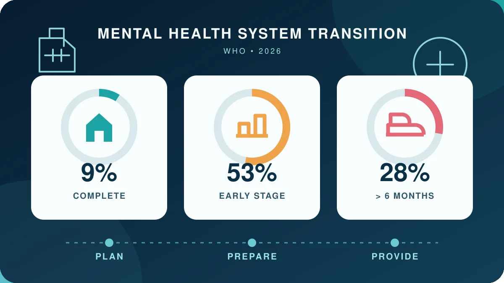

پیام مرکزی راهنما این است که «نهادزدایی» برابر با انتقال سادهٔ محل زندگی نیست. برنامه باید همزمان از بستریهای قابلپیشگیری و اقامتهای طولانی بکاهد، حقوق و کیفیت مراقبت داخل بیمارستان را بهتر کند و ترخیص حمایتشده با مسکن، درمان، درآمد و مشارکت اجتماعی فراهم آورد.

راهنمای تازه برای چه مسئلهای نوشته شده است؟
سازمان جهانی بهداشت در ۹ اکتبر ۲۰۲۶ راهنمای «حمایت از گذار به مراقبت سلامت روان و اجتماعی جامعهمحور» را منتشر کرد. این سند ۱۴۶صفحهای برای مدیران بیمارستانهای روانپزشکی و تصمیمگیرانی طراحی شده که با بزرگسالان دارای سابقهٔ اقامت طولانی—در تعریف راهنما، معمولاً شش ماه یا بیشتر—کار میکنند. نویسندهٔ سازمانی، تیم بیماریهای غیرواگیر و سلامت روان WHO است و سند بهعنوان راهنمای عملی رسمی منتشر شده، نه مقالهٔ پژوهشی با DOI. [۱] [۲]
مسئله فقط محل ارائهٔ خدمت نیست. مراقبت نهادی میتواند بخش بزرگی از بودجهٔ سلامت روان را جذب کند، افراد را از خانواده و جامعه دور نگه دارد، اختیار انتخاب را محدود کند و خطر نقض حقوق را بالا ببرد. WHO در مقابل، مراقبت شخصمحور و حقوقمدار را پیشنهاد میکند؛ اما هشدار میدهد که خروج از نهاد بدون خدمات جایگزین میتواند به رهاشدگی، بیخانمانی یا قطع درمان بینجامد. [۱]
نهادزدایی فقط بستن بیمارستان نیست
در این چارچوب، کمکردن تخت یا صدور برگهٔ ترخیص پایان کار نیست. سیاست، قانون و بودجه باید با هم تغییر کنند و خدمات جامعهمحور پیش از انتقال ظرفیت واقعی داشته باشند. مسکن پایدار، مراقبت اولیه و تخصصی، پشتیبانی اجتماعی، آموزش و اشتغال، حمایت از خانواده و دسترسی به کمک در بحران اجزای مکملاند. بیمارستان بهتنهایی نمیتواند این شبکه را بسازد؛ نهادهای عمومی، خدمات اجتماعی، سازمانهای محلی و افراد دارای تجربهٔ زیسته باید شریک باشند. [۱] [۲]
این تمایز از نظر ایمنی مهم است. ترخیص بدون پیگیری، دارو، سرپناه یا حمایت درآمدی ممکن است ظاهراً آمار اقامت را کم کند، اما زندگی مستقل و مشارکت اجتماعی ایجاد نمیکند. به همین دلیل راهنما بر برنامهٔ فردی، تداوم مراقبت و سنجش نتیجههایی فراتر از تعداد تخت—مانند انتخاب، کرامت، ارتباط اجتماعی و امکان بازگشت سریع به کمک—تأکید دارد.
سه مرحله و سه حوزهٔ اقدام
WHO اقدامات را در سه مرحله میچیند: «برنامهریزی» برای تعیین جهت، مسئولیت و منابع؛ «آمادهسازی» برای ساخت ظرفیت، مشارکت و خدمات جایگزین؛ و «ارائه» برای اجرای انتقال و پشتیبانی مداوم. این ترتیب یادآوری میکند که انتقال نباید پیش از آمادهشدن جامعه و مسیر پیگیری آغاز شود. راهنما نسخهٔ یکسانی برای همه کشورها نمیدهد و از مدیران میخواهد چارچوب را با قوانین، منابع و فرهنگ محلی تطبیق دهند. [۱]
سه حوزهٔ نفوذ بیمارستان نیز جدا شده است: پیشگیری از پذیرشهای غیرضروری و کوتاهکردن اقامتهای قابلاجتناب؛ تغییر فرهنگ و شیوهٔ مراقبت داخل بیمارستان برای حفاظت بهتر از حقوق؛ و افزایش ترخیص حمایتشده، پیوستگی مراقبت و مشارکت اجتماعی. مسئولیتها در قالب رهبری مستقیم، مشارکت با دیگران و مطالبه از مقامهای صاحب اختیار دستهبندی شدهاند؛ یعنی بیمارستان همه ابزارها را ندارد، اما از اصلاح هم کنار گذاشته نمیشود.
اعداد جهانی چه میگویند؟
خبر رسمی WHO با استناد به Mental Health Atlas 2024 گزارش میکند که فقط ۹٪ کشورهای پاسخدهنده گذار از بیمارستان روانپزشکی به مراقبت جامعهمحور را کامل کردهاند؛ ۵۳٪ هنوز در مرحلهٔ آغازیناند و تختها و خدماتشان بیشتر در بیمارستانهای روانپزشکی متمرکز است. همچنین ۲۸٪ افراد پذیرفتهشده در بیمارستانهای روانپزشکی بیش از شش ماه میمانند. [۲] [۳]
این درصدها شاخص عملکرد نظام سلامتاند، نه احتمال موفقیت یا شکست درمان برای یک بیمار. تفاوت تعریفها، ظرفیت ثبت داده و پاسخدهی کشورها نیز مقایسه را محدود میکند. بااینحال، فاصله میان ۹٪ و ۵۳٪ نشان میدهد که توصیهٔ راهنما مسئلهای حاشیهای نیست: بیشتر نظامهای گزارشدهنده هنوز انتقال کامل را تجربه نکردهاند.
سطح شواهد و محدودیتها کجاست؟
این سند یک راهنمای اجرایی مبتنی بر شواهد و راهنماییهای پیشین WHO است. مشارکت کارشناسان بینالمللی و افراد دارای تجربهٔ زیسته نقطهٔ قوت آن است، زیرا پیامدهای عملی و حقوقی را کنار ساختار خدمات میگذارد. اما این قالب با کارآزمایی تصادفی یا مرور نظاممند یک مداخلهٔ مشخص برابر نیست؛ سند یک اندازهٔ اثر مشترک برای «مراقبت جامعهمحور» یا درجهبندی واحد قطعیت ارائه نمیکند. [۱] [۲]
قابلیت اجرا به منابع کشور وابسته است: کمبود نیروی متخصص، مسکن حمایتشده، خدمات بحران، بودجهٔ اجتماعی و هماهنگی میان وزارتخانهها میتواند انتقال را کند یا ناایمن کند. بنابراین عبارت «جامعهمحور بهتر است» مجوز بستن شتابزدهٔ خدمات بستری نیست. بخش بستری کوتاهمدت و ایمن همچنان میتواند لازم باشد؛ موضوع راهنما پایاندادن به وابستگی طولانیمدت و ناموجه به نهاد است، نه حذف همهٔ مراقبت بیمارستانی.
پیام کاربردی چیست؟
برای سیاستگذار و مدیر، معیار موفقیت باید از «چند تخت بسته شد؟» به «آیا فرد پس از ترخیص مسکن، درمان، حمایت اجتماعی، حق انتخاب و مسیر روشن بازگشت به کمک دارد؟» تغییر کند. مشارکت واقعی افراد دارای تجربهٔ زیسته نیز باید از مشورت نمادین فراتر برود و در طراحی، اجرا و ارزیابی خدمات حضور داشته باشد. [۲]
برای بیمار و خانواده، این گزارش توصیهٔ شخصی برای پذیرش یا ترخیص نیست. جابهجایی بین بیمارستان و جامعه تصمیمی بالینی و اجتماعی است که به ایمنی، ترجیح فرد، شبکهٔ حمایت و دسترسی محلی وابسته است. پیام عمومی راهنما روشن است: آزادی و حضور در جامعه نباید با قطع مراقبت معاوضه شود؛ انتقال ایمن زمانی معنا دارد که حمایت لازم واقعاً همراه فرد باشد.
منابع اصلی
صفحهٔ رسمی انتشار، PDF اصلی ۱۴۶صفحهای، ساختار راهنما و خبر رسمی WHO بررسی شد. دادههای زمینهای ۹، ۵۳ و ۲۸ درصد با گزارش Mental Health Atlas 2024 تطبیق داده شد. این سند راهنمای عملیِ مبتنی بر شواهد است، نه مرور نظاممند یا کارآزمایی؛ برای توصیههای آن اندازهٔ اثر واحد و قطعیت درجهبندیشدهای گزارش نشده و داوری تخصصی مستقل ادعا نمیشود.
این مطلب برای آگاهی عمومی است و جایگزین تشخیص یا درمان فردی نیست.